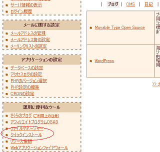
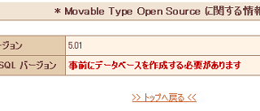
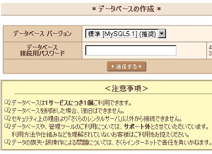
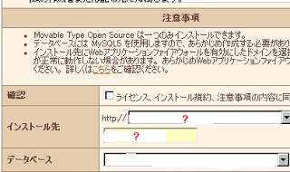
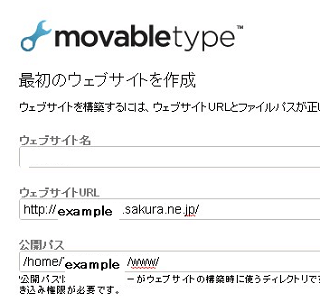
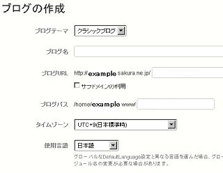
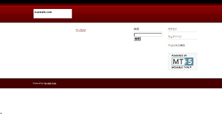

さくらインターネットで Movable Type を自動インストール
さくらインターネットですが、CMSの自動インストールに対応したというメールが来ていたんで、 Movable Type でブログを作ってみました。
ライトプランでは対応してないようですが、スタンダードプラン以上で mtos のほか、wordpress やズープスなどもクイックインストールできるようになったみたいです。
MTブログ可能なレンタルサーバー比較はこちら。
MTレンタルサーバーの格安情報
今回わたしが Movable Type をインストールしたのは、デフォルトで提供されている初期ドメインなんですが、使っていなかった独自ドメインもあったんで、ついでにそれもＭＴブログ化してみることにしました。
この自動インストールの方法ですが、管理画面の「クイックインストール - ブログ」の箇所で Movable Type と wordpress が選べるようになってます。

とりあえず、Movable Type を選んでみたんですが、先にデータベースを作成してくださいとのことみたいです。データベースの作成は、データベース設定のところから作ることができます。


データベースを作成したあと、再度、Movable Type を自動インストールしようと思ったんですが、ここでインストール先をどのドメインにするかで、ちょっと迷ってしまいました。

私の場合、初期ドメインがわかりやすいと思い、デフォルトで提供されているさくらのサブドメインにインストールしたんですけど、ブログを作成した際、カテゴリ名などでフォルダ名がバッティングしてしまうと、上書きされるような気がします。
そんなわけで、インストールする前に、今あるファイルはすべてダウンロードしてバックアップしておいた方がいいと思います。
ちなみに、ひとつしかブログを作成しない場合は、直接そのドメインへインストールした方がいいです。
インストール先を選択したら、あとはアカウントの作成あれこれしてるうちに出来上がります。わたしの場合、デフォルトの初期ドメインにインストールしたので、こんな感じです。

そんなこんなで、ウェブサイトが完成したんですけど、これにブログを追加するという形みたいです。ブログは、ダッシュボードの右の方にある「新しいブログ」のボタンを押して作ることができます。
個人で作成する場合、ウェブサイトとブログをわけて作るケースは少ないと思うので、ウェブサイトもブログも同一のドメインに設定してもいいのではないかなと思います。

初期ドメインにアクセスしてみると、ちゃんとできていたようです。
ちなみに、ダッシュボードをお気に入りに追加しておくと、次回ログインするときに便利かと思います。

こんな感じで、とりあえず、初期ドメインでのブログはできたんですが、もう一個、独自ドメインで別のブログも設定したんで、独自ドメインの設定方法についても、次回更新しようと思います。